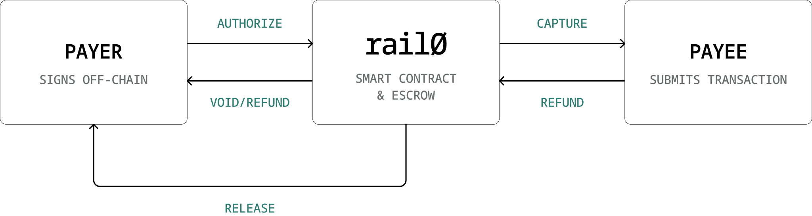
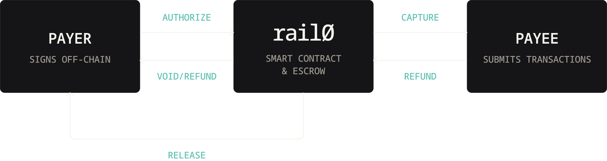
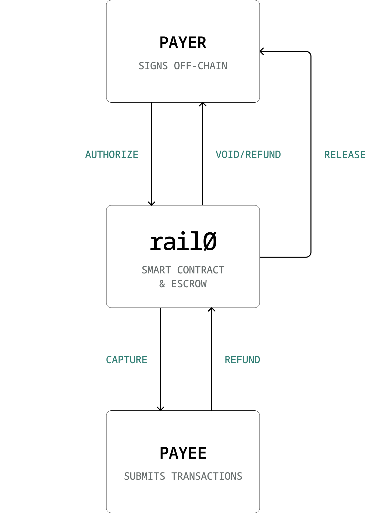
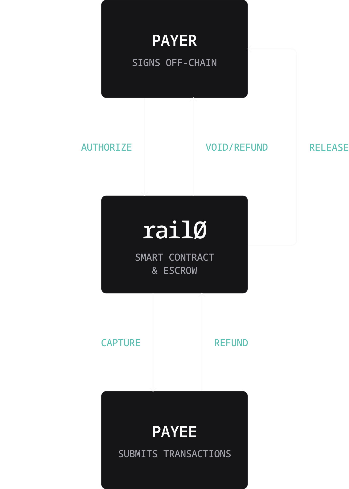

Permissionless stablecoin payments for commerce.
The internet runs on open protocols. Payments are the exception. rail0 is a single immutable smart contract implementing the full authorize → capture → refund lifecycle for stablecoin payments — with no owner and no privileged operator.
The zero is literal
Four zeros between buyer and merchant.
The zero in rail0 is not branding — it counts what the protocol removes. Nothing sits between the two parties, nothing is skimmed off the top, no one holds a key that can change the rules, and no one decides who is allowed in. It also marks day zero: the moment payments stop being a service rented from someone else's network and become a commodity protocol, the way HTTP is.
Intermediaries
Buyer and merchant transact peer-to-peer. The contract routes nothing to anyone else.
Protocol fees
Every captured token reaches the merchant in full. The contract takes nothing.
Privileged operators
No owner, no admin, no pauser, no upgrade path. The code is fixed at deploy time.
Permission
Anyone can deploy the contract. Anyone can use it. No gatekeeper to ask.
Protocol overview
One contract, zero operators.
The buyer signs once off-chain; the merchant submits and pays gas. Funds flow
straight from payer to payee through the rail0 escrow — authorize in, capture out, and void,
refund, or release back to the buyer. No processor,
no gateway, no privileged operator in the path.




How it works
One signature. No allowance.
Signs, never broadcasts
The buyer signs an EIP-3009 TransferWithAuthorization over the
token's domain — like a signed check. Any wallet that signs typed data works:
no smart-account wallet, no bundler, no approval.
Submits and pays gas
The merchant submits the transaction and absorbs the cost of acceptance — the way they always have under card networks. On stablecoin-native chains, gas is paid in the same asset being settled.
Binds terms to the signature
rail0 derives a deterministic EIP-3009 nonce from the exact payment terms. Tamper with any field and the recovered signer won't match — the token reverts. No separate intent typehash needed.
Deployments
Works on multiple chains.
rail0 is not tied to any one chain. It runs on any network that meets two hard
requirements: an EVM that compiles Solidity 0.8.27, and tokens that expose the
EIP-3009 transferWithAuthorization / receiveWithAuthorization
entrypoints — the off-chain signatures the whole protocol is built on. That's the
entire bar. Anyone can deploy it, permissionlessly, wherever those conditions hold.
| Chain | Network | Stablecoins | Status | Address |
|---|---|---|---|---|
| Arc | Testnet | USDC, EURC | Live | 0x58E1…2De2 |
| Celo | Sepolia testnet | USDC, USDT | Live | 0xd9b5…6792 |
| Ethereum | Mainnet | USDC, EURC | Planned | — |
| Base | Mainnet | USDC, EURC | Planned | — |
| Arbitrum | Mainnet | USDC | Planned | — |
| Optimism | Mainnet | USDC | Planned | — |
| Polygon | Mainnet | USDC | Planned | — |
| Avalanche | Mainnet | USDC, EURC | Planned | — |
| Plasma | Testnet | USDT0 | Planned | — |
| Tempo | — | TIP-20 | Awaiting EIP-3009 | — |
Quickstart
The lifecycle in three cast calls.
Authorize, capture, refund — the full path with Foundry's cast. In
production a wallet SDK handles the EIP-712 signing; here's the bare metal.
1 — Authorize a payment
The buyer signs an EIP-3009 TransferWithAuthorization off-chain; the merchant submits and pays gas.
# 1. Compute the deterministic EIP-3009 nonce rail0 expects CONFIG_HASH=$(cast call $RAIL0 "hashPayment($PAYMENT_TYPE)(bytes32)" "$PAYMENT" --rpc-url $RPC) NONCE=$(cast call $RAIL0 "authorizeNonce(bytes32,bytes32)(bytes32)" $PAYMENT_ID $CONFIG_HASH --rpc-url $RPC) # 2. Buyer signs the EIP-3009 digest over the token's domain (off-chain) # validAfter = 0, validBefore = p.authorizationExpiry — pinned by rail0 SIG=$(cast wallet sign --no-hash --private-key $PAYER_KEY $DIGEST) R=0x${SIG:2:64}; S=0x${SIG:66:64}; V=0x${SIG:130:2} # 3. Merchant submits the transaction and pays gas cast send $RAIL0 "authorize(bytes32,$PAYMENT_TYPE,uint8,bytes32,bytes32)" \ $PAYMENT_ID "$PAYMENT" $V $R $S \ --rpc-url $RPC --private-key $PAYEE_KEY
2 — Capture an authorized payment
Merchant only. Pulls escrowed funds to the merchant before authorizationExpiry — partial or full, across one or more calls.
# Capture 100 USDC (6 decimals) of the escrowed authorization cast send $RAIL0 "capture(bytes32,$PAYMENT_TYPE,uint256)" \ $PAYMENT_ID "$PAYMENT" 100000000 \ --rpc-url $RPC --private-key $PAYEE_KEY
3 — Refund a captured payment
Captured funds live in the merchant's wallet, so the merchant signs an EIP-3009 refund and submits it; the funds return to the buyer. No allowance, no approve.
# 1. Refund nonce for the CURRENT refundable balance (here: 50 USDC) NONCE=$(cast call $RAIL0 "refundNonce(bytes32,bytes32,uint120)(bytes32)" $PAYMENT_ID $CONFIG_HASH 50000000 --rpc-url $RPC) # 2. Merchant signs the EIP-3009 digest (validBefore = p.refundExpiry) SIG=$(cast wallet sign --no-hash --private-key $PAYEE_KEY $DIGEST) R=0x${SIG:2:64}; S=0x${SIG:66:64}; V=0x${SIG:130:2} # 3. Merchant submits — funds always reach $PAYER cast send $RAIL0 "refund(bytes32,$PAYMENT_TYPE,uint256,uint8,bytes32,bytes32)" \ $PAYMENT_ID "$PAYMENT" 50000000 $V $R $S \ --rpc-url $RPC --private-key $PAYEE_KEY